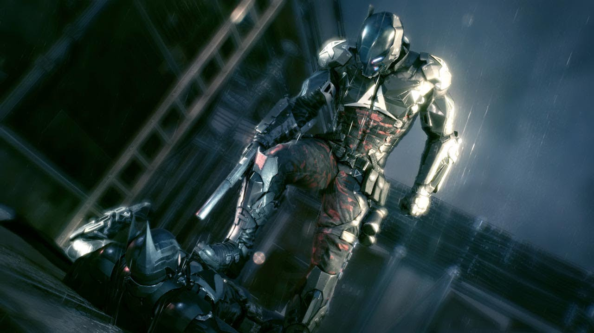
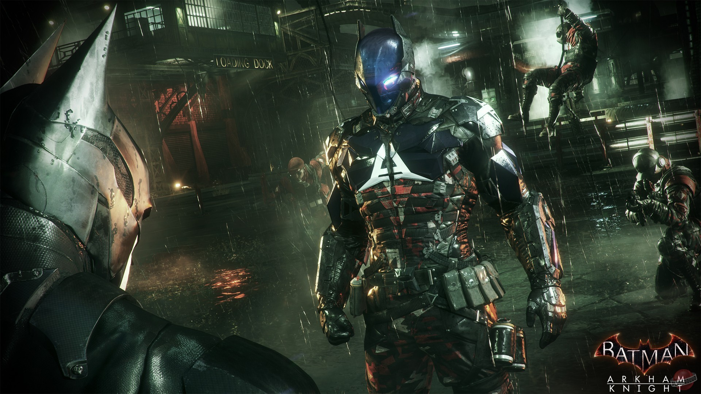
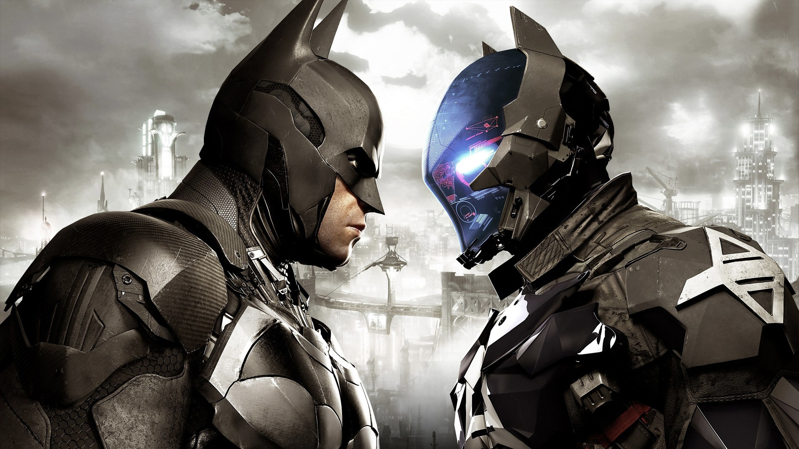
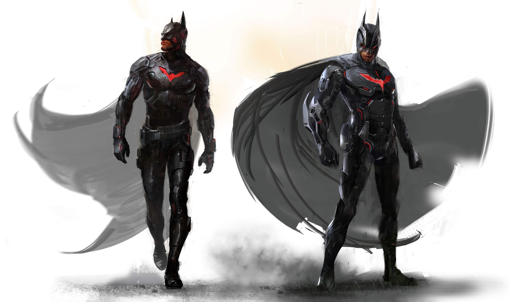
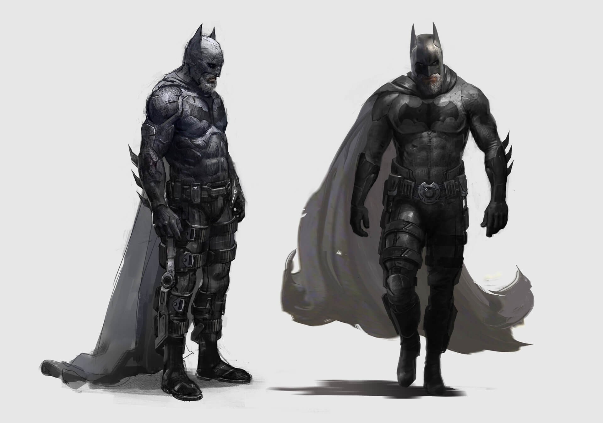
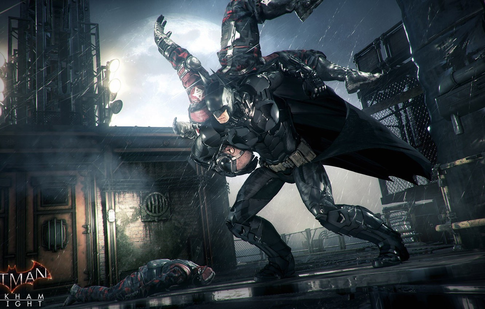
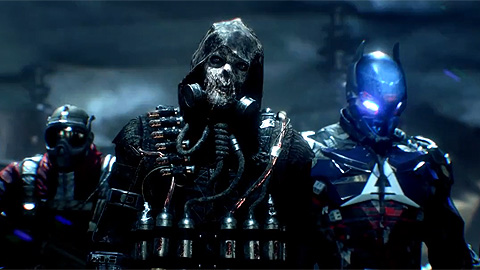
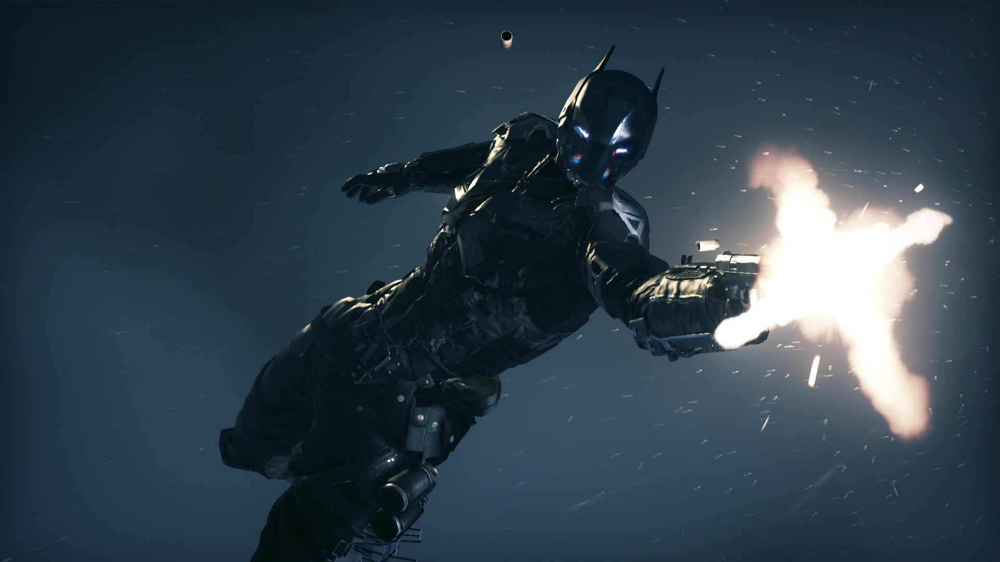
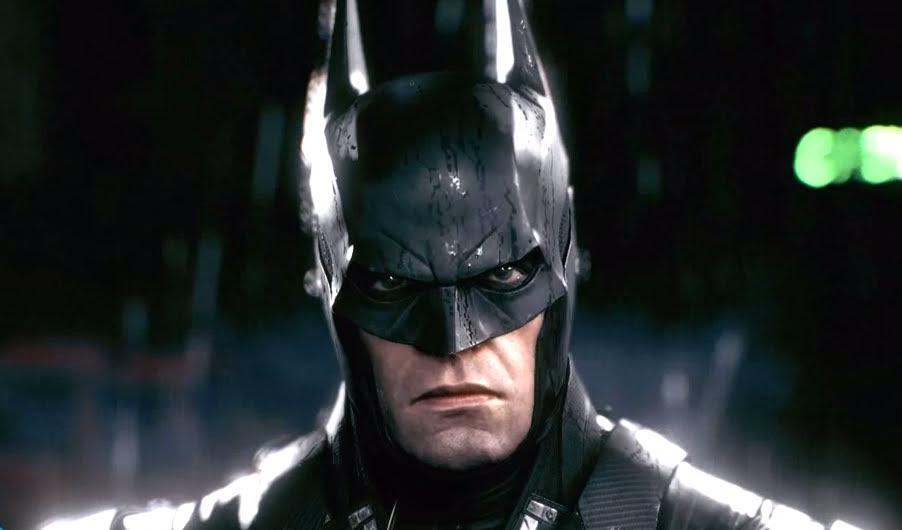

Бэтмен — персонаж комиксов, созданных компанией DC Comics, супергерой, борющийся со злом.
Под маской Человека – Летучей мыши скрывается герой по имени Брюс Уэйн.
Среди других мировых супергероев Бэтмен оказался одним из самых популярных.
Образ персонажа появляется в комиксах, художественных фильмах, мультфильмах и компьютерных играх.
Первая экранизация появилась вскоре после дебютного появления героя на страницах комикса.
В 1943 году на экраны вышел сериал «Бэтмен». Картина включила 15 эпизодов, в которых Темный рыцарь с другом Робином сражаются с главным врагом Америки времен Второй мировой войны — японцами.
Оппонентом выступил глава преступной группировки, шпион доктор Драка.
Роль главного героя исполнил актер Льюис Уилсон.
Супергерой
Брюс Уейн
Готэм сити
  
  
  